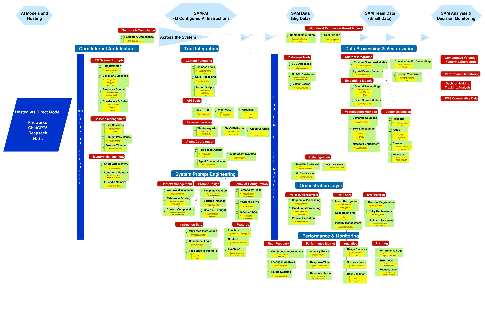

Architecture Considerations Map
The full system diagram — click any of the five top-level sections below to open its page.

How the Platform Fits Together
SAM-AI is not a single model — it is a stack. At the base sits a choice of foundation models, hosted or run directly, wrapped in an internal architecture that gives every model a consistent identity, memory, and rulebook. On top of that, a layer of FM-configured instructions runs across the entire system: tool integrations, agent coordination, and prompt engineering that shape how the AI reasons about any request, regardless of which model answers it.
Those instructions reach into two distinct data worlds. SAM Data is the firm's big data estate — permissioned databases, ingestion pipelines, and an orchestration layer that routes and sequences work across it. SAM Team Data is the smaller, higher-touch layer of team-specific knowledge — vectorized, embedded, and continuously measured for accuracy and performance. Everything the platform produces ultimately feeds the fifth pillar: Analysis & Decision Monitoring, where outputs are scored, compared, and tracked back to the decisions they informed.
A sixth pillar, MCP Output and Integration, sits on top of all of it — the layer that exposes the platform's tools and outputs through the Model Context Protocol, so a Claude Cowork-style workflow can call SAM-AI's functions, pull its data, and deliver finished work back to the user.
The six pages below correspond to the six pillars of the architecture, each expanded into a full description of what it contains and why it exists.
The Six Pillars
Read them in order for the full data-and-instruction flow, or jump straight to the one you need.
AI Models and Hosting
The foundation model layer — hosted vs. direct providers like Fireworks, ChatGPT5, and Deepseek — plus the internal architecture of system prompts, sessions, and memory that wraps every model, and the regulatory compliance rules that bind it.
Read → Pillar 2SAM-AI — FM Configured AI Instructions
The instruction layer that runs across the whole system: tool integration and agent coordination, plus the system prompt engineering — context, prompt design, behavior, and features — that gives the AI a consistent way of reasoning.
Read → Pillar 3SAM Data (Big Data)
The firm's permissioned data estate: content moderation and privacy controls, SQL/NoSQL/vector database tools, data ingestion pipelines, and the orchestration layer that routes, sequences, and recovers from failure across it all.
Read → Pillar 4SAM Team Data (Small Data)
The team-specific knowledge layer: custom fine-tuned models and embeddings, vectorization methods and vector databases, plus the performance and monitoring stack — feedback, metrics, analytics, and logging — that keeps it accurate.
Read →SAM Analysis & Decision Monitoring
Where the platform closes the loop: comparative valuation scorecards, ongoing performance monitoring, decision tracking and analysis, and PMS comparative data — turning AI output into an auditable record.
Read → Pillar 6MCP Output and Integration
The delivery layer for Claude Cowork-style workflows: MCP servers and tool exposure, connector integrations, agentic workflow patterns, output delivery as files and live artifacts, and the governance that scopes what a workflow can touch.
Read →Platform at a Glance
| Pillar | Primary Role | Key Components |
|---|---|---|
| AI Models and Hosting | Chooses and wraps the foundation model | 3rd-party providers, FM system prompts, session & memory management, regulatory compliance |
| SAM-AI FM Configured Instructions | Directs how the model reasons, system-wide | Tool integration, agent coordination, system prompt engineering |
| SAM Data (Big Data) | Supplies firm-wide structured & unstructured data | Permissioned access, database tools, data ingestion, orchestration layer |
| SAM Team Data (Small Data) | Supplies team-specific knowledge, vectorized | Custom embeddings, vector databases, performance & monitoring |
| SAM Analysis & Decision Monitoring | Scores and audits the resulting decisions | Valuation scorecards, performance monitoring, decision tracking, PMS comparatives |
| MCP Output and Integration | Delivers the platform's output through Cowork-style workflows | MCP servers & tool exposure, connectors, agentic workflow patterns, output delivery, governance |